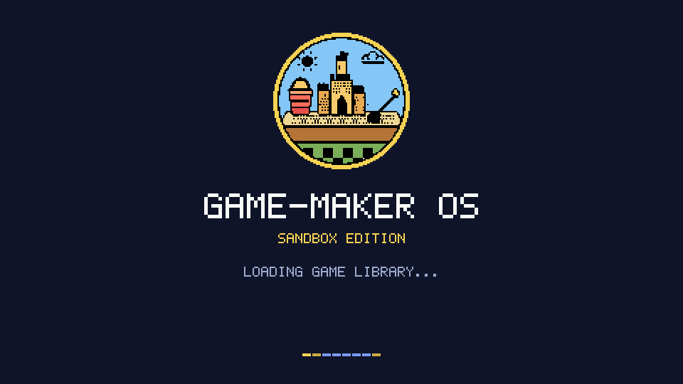
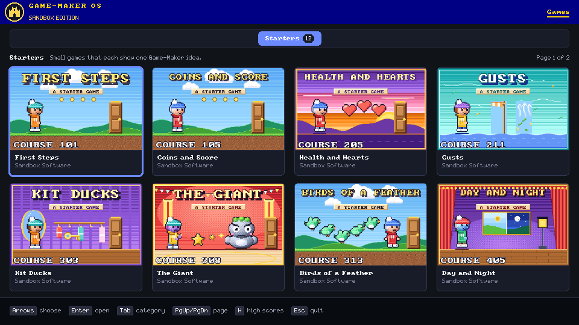

Sandbox Edition
Sandbox Edition
Game-Maker OS
A game-library operating system for the Raspberry Pi Zero W that plays DOS Game-Maker games straight from the SD card.
Pi Zero W / HDMI / SD card
What it shows on the TV




Captured from the host renderer, which draws the same frames as the board.
Steps
- Format a card as FAT32.
- Copy sandbox-kernel's boot files to the root: everything
make bootputs inbuild/boot(bootcode.bin,start.elf,fixup.dat,config.txt,kernel.img,KERNA.BIN,KERNB.BIN,BOOTCT0.BIN,BOOTCT1.BINand the license texts). - Make an
OSfolder and putGMOS.ELFin it (makehere buildsbuild/GMOS.ELF). - Put your games in
GAMES, one folder each, with the library index beside them. - Put the card in the Pi, plug in HDMI, then power. The kernel starts
/OS/GMOS.ELFafter a 10 second countdown.
Where games come from
Game-Maker: Sandbox Edition's games. Its web/scripts/gmosCard.ts writes the layout below. To copy by hand, follow it, with one folder for each game and the game's files inside, named in upper-case 8.3 as the build wrote them:
/
bootcode.bin start.elf fixup.dat
config.txt kernel.img
KERNA.BIN KERNB.BIN
BOOTCT0.BIN BOOTCT1.BIN
OS/
GMOS.ELF
GAMES/
LIBRARY.JSL
DICE/
DICE.GAM
...
A game's folder is named for its .GAM file (8 letters at most). LIBRARY.JSL gives titles, categories and blurbs; a game it does not list goes under Other. Get games and the script from Game-Maker: Sandbox Edition. Details: build notes.
Hardware
A Raspberry Pi Zero W with an SD card and an HDMI screen. The picture is 960x540, doubled to fill a 1080p screen with square pixels.
- Optional: a Waveshare 2.13 inch e-ink HAT shows the kernel's status.
- The USB link to a computer is for development, and for now it is also the keyboard: the computer sends key presses.
| Coming | State |
|---|---|
| Sound over HDMI | In progress |
| A USB keyboard | In progress |
| The TV remote over HDMI-CEC | In progress |
There is no sound on the board yet. Each sound a game plays is logged for a page on the computer to play.
Links
- sandbox-kernelThe kernel Game-Maker OS runs on.
- OS author's guideHow to write your own OS for the kernel.
- Hello World exampleComing.
- Game-Maker PocketThe browser flasher for the pocket player.
- Game-Maker: Sandbox EditionThe games and the web editor.
- SourceThis repository, with its docs.